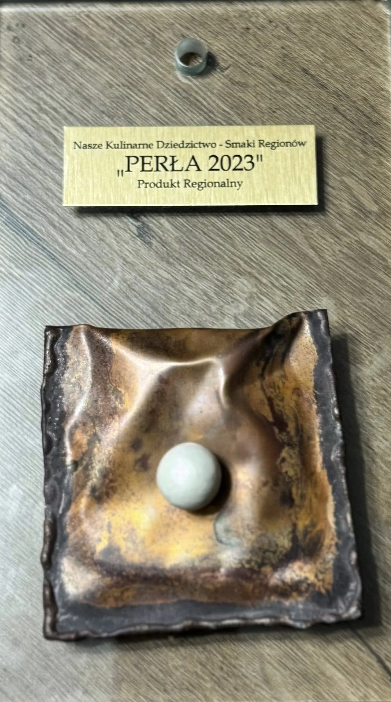
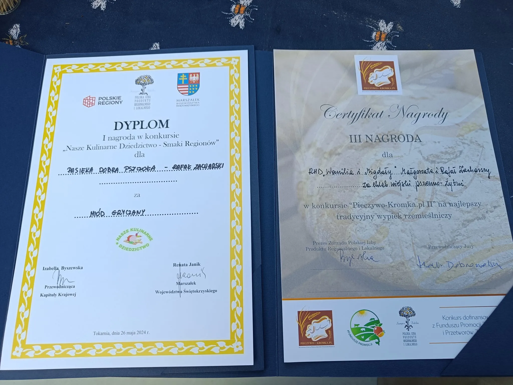
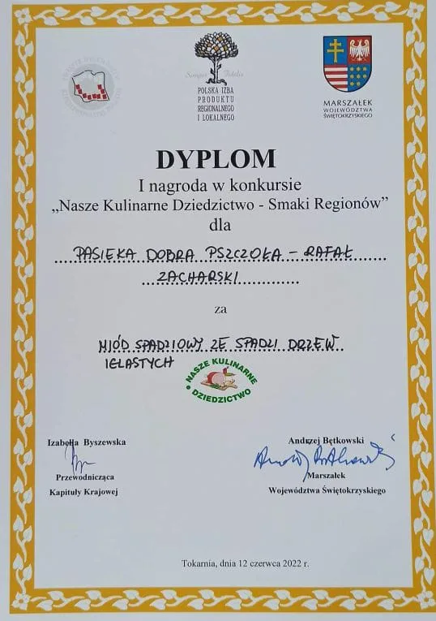
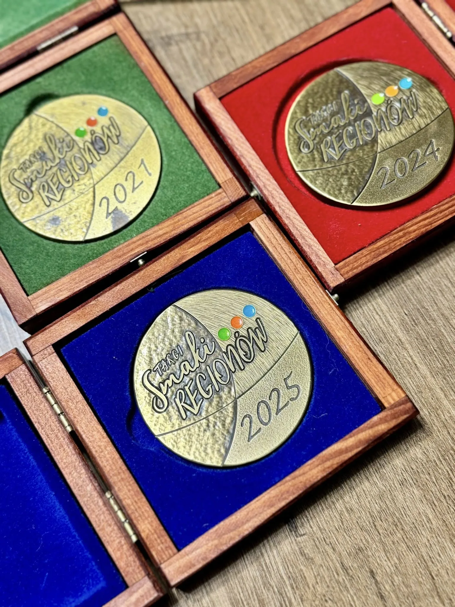
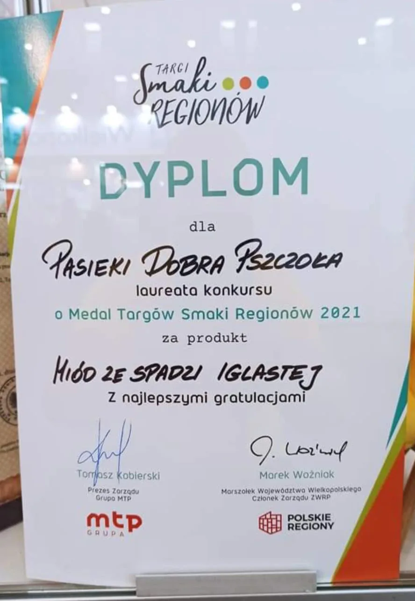
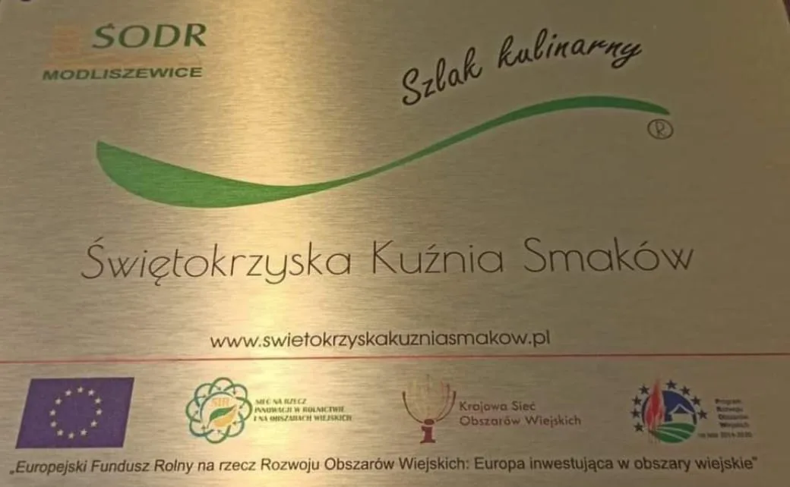
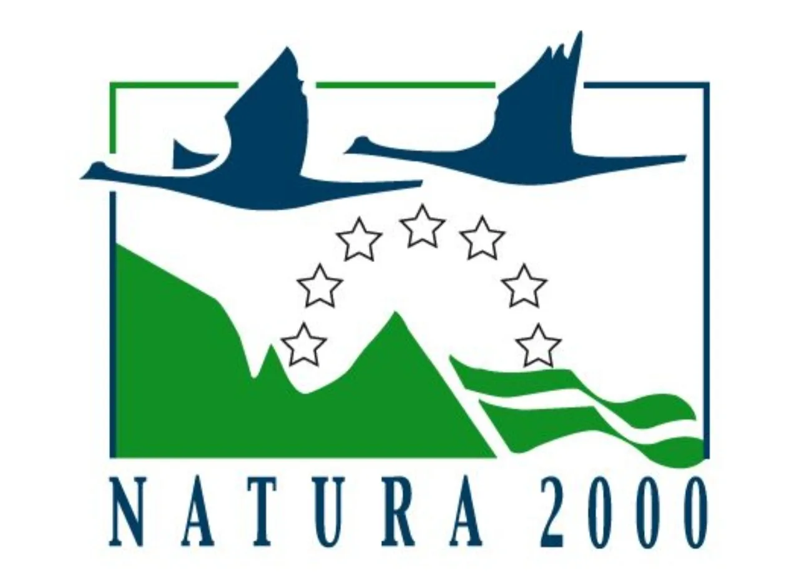

Miód wielokwiatowy wiosenny z Pasieki Dobra Pszczoła zdobył Perłę 2023 – prestiżową nagrodę dla najwyjątkniejszych produktów regionalnych w całym kraju.
🐝 Miód wielokwiatowy wiosenny • Perła 2023Ogólnopolska nagroda dla najwybitniejszych produktów regionalnych. Miód wielokwiatowy wiosenny z Małyszyna Dolnego zdobył ją jako jeden z nielicznych miodów w historii konkursu.

Miód spadziowy z drzew iglastych Puszczy Iłżeckiej ponownie zdobył złoty medal na Międzynarodowych Targach Poznańskich w 2024 roku. Drugie złoto potwierdza niezmienną jakość.

Pierwsze złoto na Międzynarodowych Targach Poznańskich za miód ze spadzi drzew iglastych Puszczy Iłżeckiej. Głęboki, leśny aromat zachwycił jury ogólnopolskiego konkursu.

Najlepszy miód gryczany w Województwie Świętokrzyskim. Ciemny, intensywny miód bogaty w składniki mineralne, pozyskany z gryki uprawianej w okolicach Puszczy Iłżeckiej. Wyróżnienie również na MTP Poznań.

Wyróżnienie na Międzynarodowych Targach Poznańskich za delikatny, biały miód lipowy. Jury doceniło jego wyjątkowy aromat kwiatów lipy i klasyczną kremową barwę.
🎖 Wyróżnienie MTPCertyfikat prestiżowej Sieci Dziedzictwa Kulinarnego – europejskiego systemu certyfikacji żywności regionalnej najwyższej jakości. Odebrany z rąk Marszałka Województwa Świętokrzyskiego.

Certyfikat Świętokrzyskiego Ośrodka Doradztwa Rolniczego dla producentów wyróżniających się jakością i autentycznością produktów regionalnych.

Europejska Sieć Regionalnego Dziedzictwa Kulinarnego – certyfikat autentyczności i tradycji wytwarzania produktów regionalnych. Przyznany w 2021 roku.
Certyfikat Świętokrzyskiego Ośrodka Doradztwa Rolniczego. Przyznawany lokalnym producentom wyróżniającym się najwyższą jakością.
Pasieka Dobra Pszczoła objęta jest stałym nadzorem Państwowej Inspekcji Weterynaryjnej. Regularne kontrole gwarantują bezpieczeństwo na każdym etapie produkcji.
Pasieka leży na granicy obszaru Natura 2000 w Puszczy Iłżeckiej. Pszczoły zbierają nektar wyłącznie z roślin dzikiego, czystego ekosystemu.

Zamów bezpośrednio od pszczelarza. Darmowa dostawa od 150 zł.